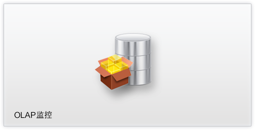
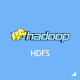

<tile-area>
  <tile-group title="集群监控">
    <tile *menuTarget="'monitor.spark'"  bg="bg-green" fg="fg-white">
      <div class="tile-content">
        
      </div>
      <span class="tile-label">Spark监控</span>
    </tile>
    <tile *menuTarget="'monitor.hbase'"  bg="bg-green" fg="fg-white">
      <div class="tile-content">
        
      </div>
      <span class="tile-label">HBase监控</span>
    </tile>
    <tile *menuTarget="'monitor.hdfs'" size="tile-wide"  bg="bg-green" fg="fg-white">
      <div class="tile-content">
        
      </div>
    </tile>
    <tile *menuTarget="'monitor.hdfs'"  bg="bg-green" fg="fg-white">
      <div class="tile-content">
        
      </div>
      <span class="tile-label">HDFS监控</span>
    </tile>
    <tile *menuTarget="'monitor.mapreduce'"  bg="bg-green" fg="fg-white">
      <div class="tile-content">
        
      </div>
      <span class="tile-label">MapReduce监控</span>
    </tile>
  </tile-group>
</tile-area>


